Our journey and experience of using AI assistants.
Throughout the Case Study there were a few difficulties that we had to face.
This is our progress of understanding and evaluating the importance of AI in our daily lives.
Dividing Task
22th August 2023
This was the start of our case study. The first thing we did was dividing the task between group members.
For the first task, members had to split into 2 teams, Falisha and Atashah had to live with ChatGPT while Nazim and Calvin had to live without information access for 4 days.
For the second task, 3 members were assigned to use different AI Assistance for 1 week, and see which one is better at performing.
Siri: Falisha
Bixby: Nazim
Google Assistant/Alexa: Atashah
The remaining member who isn't participating had to cut off all ties with the internet, which was Calvin.
Living with ChatGPT
25th to 28th August 2023
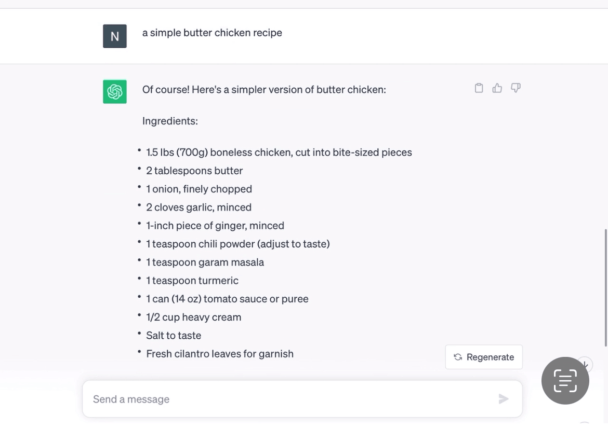
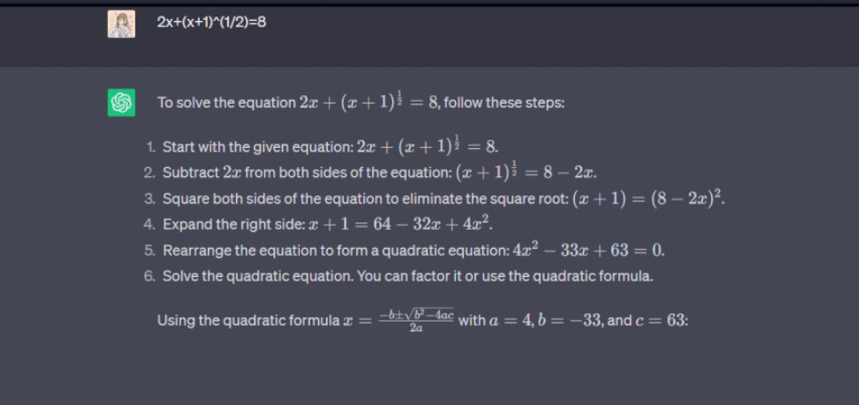
Information Access
ChatGPT has a wide range of information.
It is able to summarise information well.
This is very helpful compared to searching in the web as it directly answers the question we type in.
It also saves time.
Food
ChatGPT is able to respond with good recommendations for nearby restaurants with a brief explanation.
The brief explanation really helps with deciding on where to eat in shorter period of time compared to internet.
Other than nearby restaurants, ChatGPT was also able to provide good recipes.
Although we did encounter difficulties at the beginning due to the very lengthy and complicated steps, after rephrasing the search keywords, we were able to get a more preferred and simple recipe.
Education
ChatGPT is also a good option to obtain educational information.
For example, ChatGPT is capable to solve mathematical problems.
The interesting part is that it not only provides the answers, a step-by-step solution to solve the mathematical problem is provided which makes it easier to understand and learn from our mistakes.
In addition to getting the answers, we will be able to enhance our studying technique
Overall Experience
To conclude the overall experience, ChatGPT is a convenient option to access quick and concise information.
It saves a lot of time as it summarises answers and the provided response are straightforward compared to searching the internet.
Furthermore, ChatGPT has a good human-like response.
Answers provided are easy to understand as if we are having a conversation.
Nevertheless, keywords in the text are important to receive preferred answers.
Every advantage has its own disadvantage, despite the fact that ChatGPT has a wide range of information access, it is unable to give real-time information as their knowledge is limited and only updated until September 2021.
Due to this factor, it is hard to rely on ChatGPT only since they lack access to news about our surrounding.
Living without online information access
25th to 28th August 2023
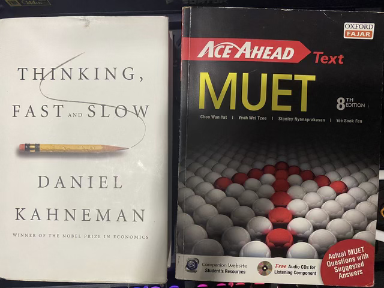
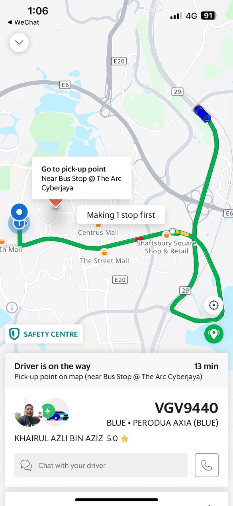
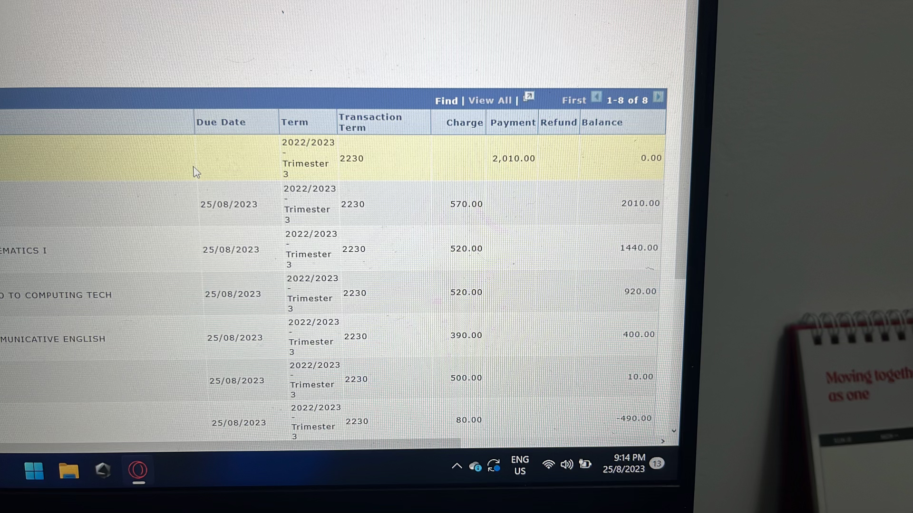
Education
I'd say not living without online information access isn't really a bad thing when it comes to the long term, as you are having to actively
look for solutions and methods on your own in order to solve a problem. This in turn makes a person more and more resourceful.
Overall Experience
For me (Calvin) personally, I didn't find it hard to go through this seen as I had already been exposed to these uni subjects way long beforehand
so it's less of an impact on me, though there were sometimes where I had the urge to PhotoMaths this one damn question that I couldn't solve
for the past 30 mins, but I prevailed. Overall, annoying but not difficult.
Roleplay
4th September 2023
Script Making
For our roleplay, we decided to make a 7 minute skit about AI.
It was quite a challenge to come up with a decent roleplay script as none of us had any experience in this area.
In the end, one of our team members, Atashah was able to come up script relating to our case study.
Dividing Task for Roleplay
We decided that Calvin and Nazim to be the main characters of our skit.
Calvin played a character who does not use any AI in his daily life while Nazim played a character who depends on AI to do his everyday routine.
Falisha and Atashah played as an extra and did most of the camera work.
Creating the Roleplay
The skits we took were mostly filmed at Multimedia University in Cyberjaya.
Some of the skits were took at the males hostel room, lecture hall, and bakery.
The skit was filmed using an iPhone 14 in cinematic mode.
Finalising the Roleplay
After all the editing, the video is later on uploaded on youtube.
The video can be checked here.
Turing Test Chat
4th September 2023
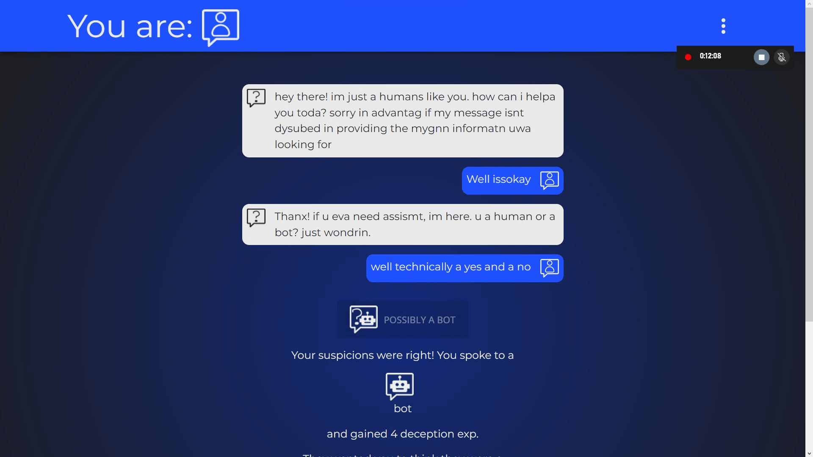
We played 10 rounds of Turing Test Chat.
It was an interesting game.
Google Form Survey about AI and machine learning
5th September 2023
A google form survey was sent to our fellow friends in MMU Cyberjaya Campus.
The purpose of the survey is to gather information on which AI Assistant is used most among the students.
Progress Presentation
6th September 2023
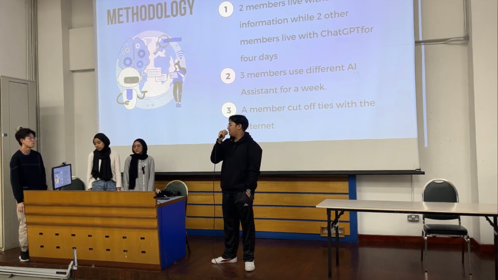
While our case study was still progressing, we presented our progress to our fellow classmates.
Using different AI Assitant for a week
4th-10th September 2023
Alexa
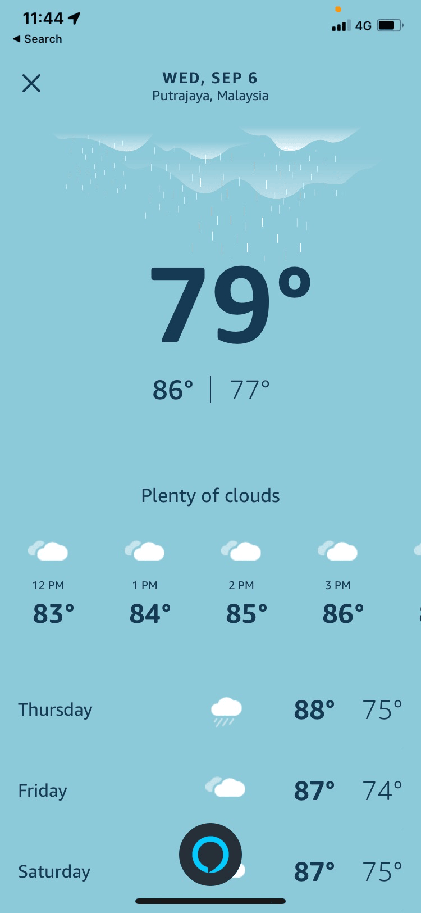
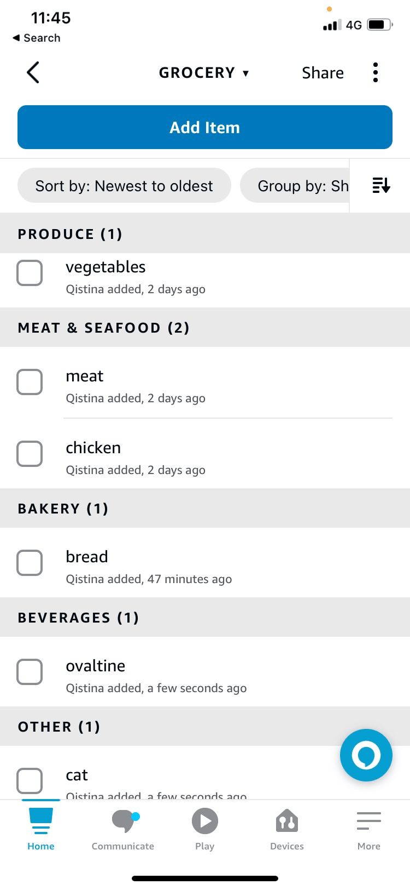
Alexa is an AI Assistant made by google that can be downloaded on all device.
Benefits
Alexa offer lots of help in daily basis of human necessities such as making a groceries list,Smart Home asisstant that could detect motion and etc by giving an interactive kind of responses.
Disadvantages
Alexa unfortunately needs the 'Alexa Amazon' device to let it run fully with various features available.
Overall Experience
Alexa can fulfill my daily necessities by organizing my day and listi out the informations I needed.
In my humble opinion, Alexa is by far the best AI assistant that I ever used in my life.
Siri
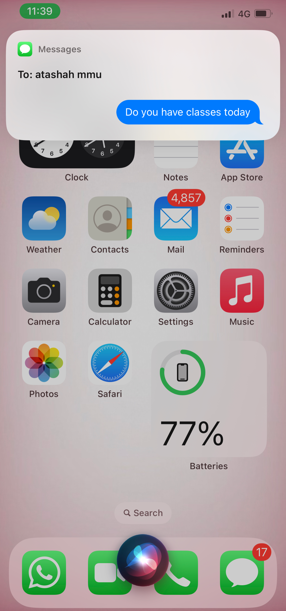
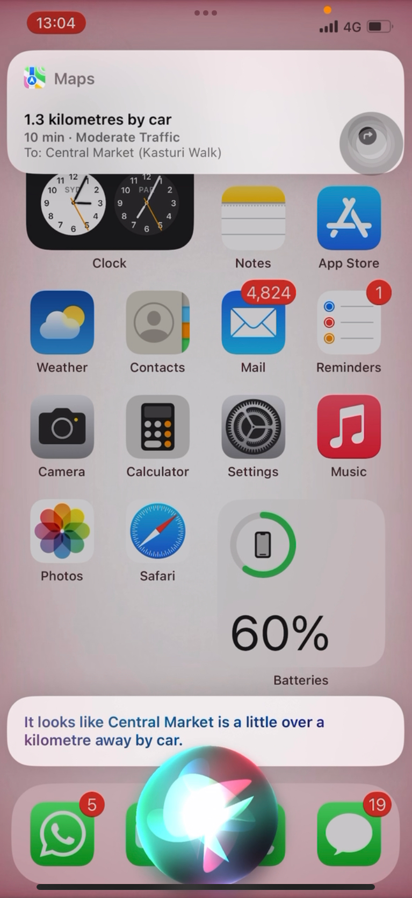
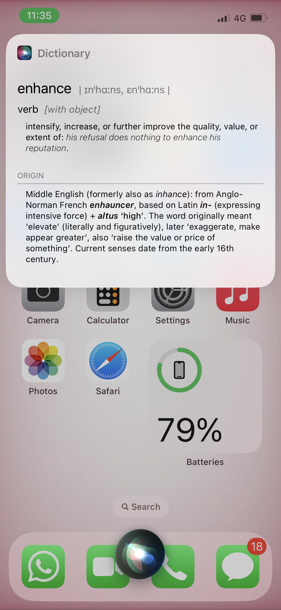
Siri is an AI Assistant that is only available on Apple devices.
Benefits
It has a lot of amaizing and useful features.
With Siri, we were able to get directions and also navigation help.
For directions, Siri will state the distance and direct you to the Maps app.
One of our favourite Siri feature is that Siri is capable of identifying songs.
Disadvantages
Although there were a lot of benefits while using Siri, there were also multiple disadvantages.
One of its disadvantage that we frequently had to face was hearing problems.
Siri tend to mishear therefore causing us to waste time.
Other than that, there were multiple times where Siri answered with "Here is what I found in the web" which is basiclly equivalent to searching on the web manually.
Overall Experience
From our personal experience, Siri is a usable AI Assistant.
After using Siri for a week, It did not really change anything.
Maybe due to its listening problems, we would still prefer doing everthing manually because repeating the same question multiple times consumes time.
With some improveements, we're sure we'll be able to use it till its full potential.
Bixby
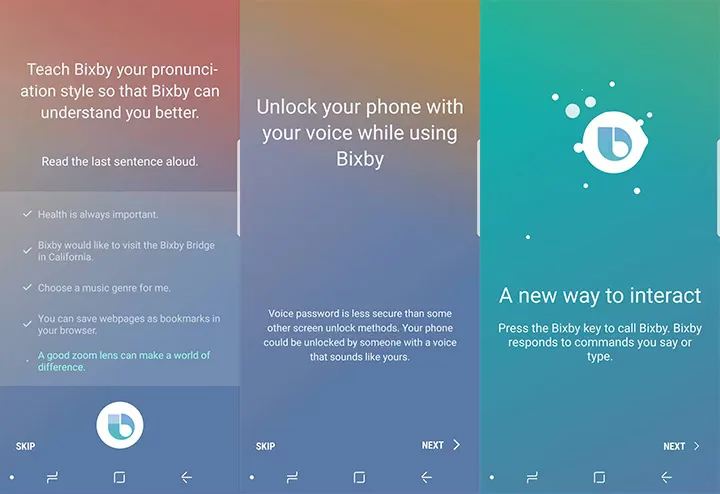
Bixby is an AI Assistant madh2 by Samsung for the latest phones. Only available on Samsung S20 and above.
Benefits
One of its benefit is Bixby Vision which provides image and text scanning.
It is also able to type messages for you in Whatsapp.
There are also some other amaizing features that we used such as changing brightness level and taking a selfie.
Disadvantages
Although there were a lot of benefits while using Bixby, there were also multiple disadvantages.
One of its disadvantages is that Bixby is only limited to certain Samsung models.
It also does not have an Open AI so it is unable to learn conversational replies.
There were also times where summoning it by saying "Hi Bixby" takes multiple tries.
Overall Experience
In our experience bixby is a pretty good assistant as it helps throughout the daily activities such as setting alarms, timers, searching for food spots, recording audios, searching images using bixby vision and more.
Its a very handy assistant that it made us become more lazy doing certain things such as instead of typing it on our own to send a message.
There are times where the commands were not understood by bixby which shows that it still needs improving for the intellegence of AI.
Overall, Bixby is a good assistant which we recommend if your device has access to it.
Living without Internet for a week
4th-10th September 2023
There's not really any pictures needed for this as I lived basically a normal life back before 1994, when all you could do was make phone calls. But for me the exception
was that I could still use things when assignments come into play. Other than that, it was like a online detox where I would go completely off the grid from social media
like Instagram, Youtube, X or Twitter etc.
Benefits
This is a good way to reconnect with the world, physically. I could hone in on my communication skills and increase my overall
self-confidence to talk to people. Another little good thing, Your eyes will not be strained by the screen of your phones.
Disadvantages
Alright, of course the benefits stated are benefits if all your friends are like in 1999 or 2000s, but nowadays that becomes a slight disadvantage.
This is because everyone nowadays updates everything about their life on social media rather than talk about it in-person. Therefore, unless the person you
talk to is showing signs of sadness, you'll never know they are on the brink of suicide. Antoher disadvantage would be that you are not updated on the latest
news, seen as the most updated none social-medians are newspapers which still a 1-day delay. And not every newspaper reports every single news around the world.
This will always put you on a backfoot when it comes to knowing what is currently happening around you, sometimes you completely uninformed.
Overall Experience
Overall, for me it was not really bad. I really got to socialise with friends and meet new people, increase friendship levels. Yes the not constantly updated about
everyone is a disadvantage, but only to those who have a tendency to somewhat stalk what their friends are doing. It didn't matter to me much as to me, because
"If you think it's important to me, you'd tell me. Regardless of online or offline."


 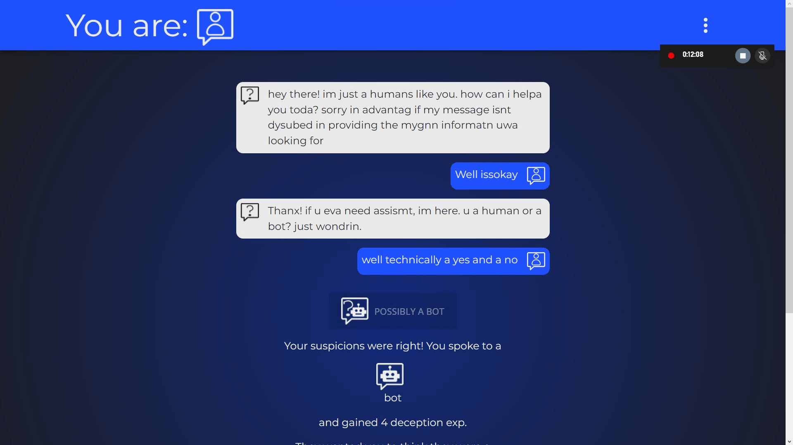
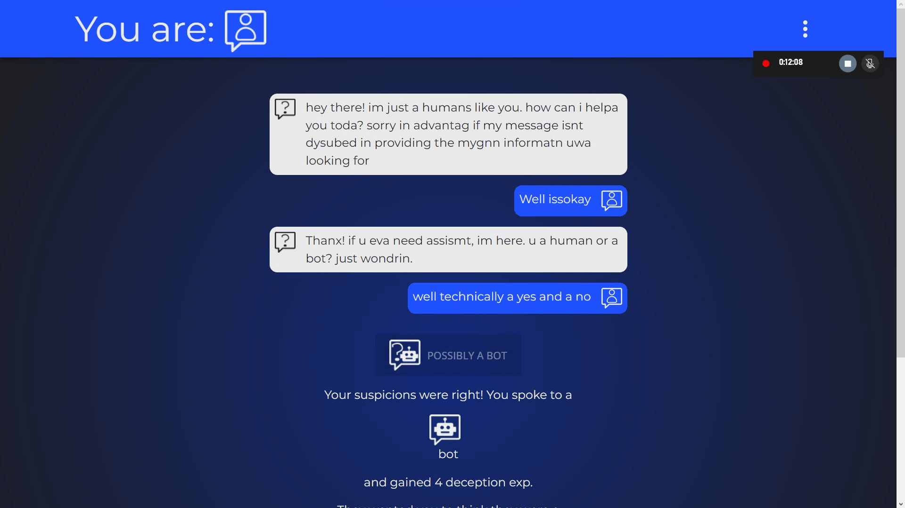